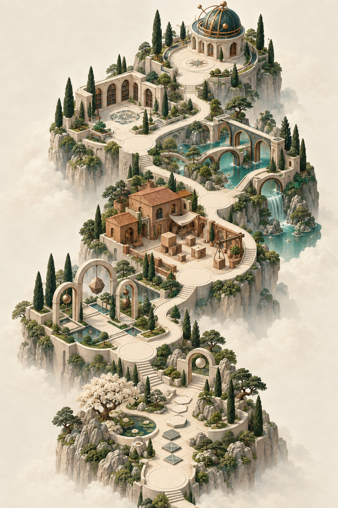
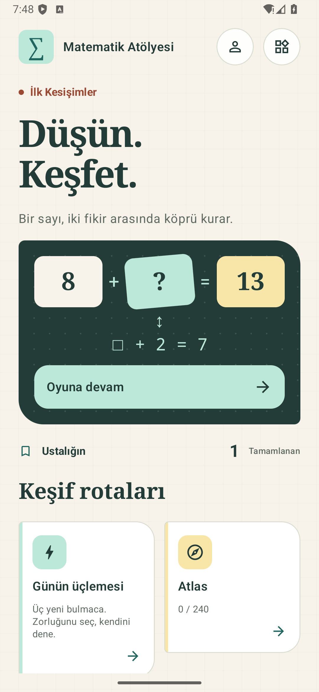
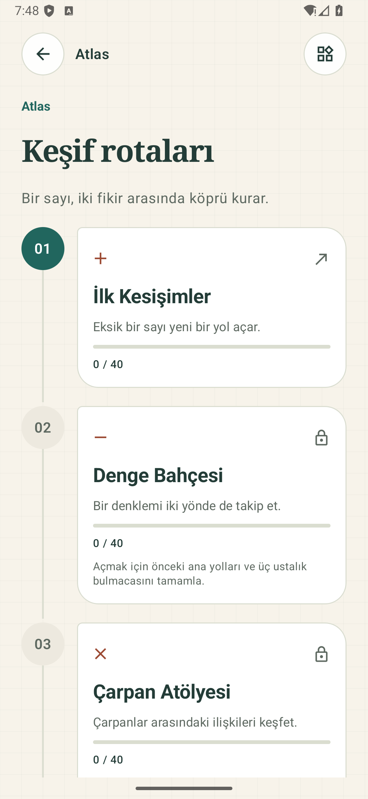
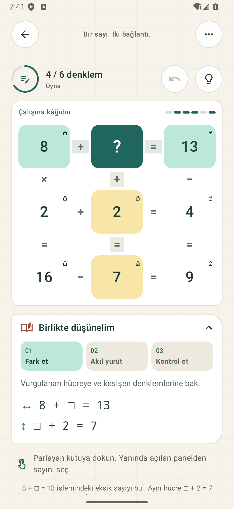

Eksik sayıları yerleştir, yatay ve dikey işlemlerin dengesini kur. Dört işlemle zihninizi dinlendiren, 240 el yapımı bulmacadan oluşan sakin bir matematik atölyesi.Fill the missing cells so every horizontal and vertical equation balances. Explore 240 verified puzzles across six illustrated regions at your own pace.
6 Bölge · 24 Bölüm · 240 Bulmaca6 Regions · 24 Chapters · 240 Puzzles
Numara Atlası: Birbirine Bağlanan Sayılar.Number Atlas: Connecting the Numbers.
İlk Kesişimler'den başlayıp Düğüm Gözlemevi'ne kadar altı resimli bölgede ilerleyin. Ana yolu takip edin, isteğe bağlı yan yolları keşfedin ve ustalık bulmacalarıyla yeni bölgelerin kilidini açın.Begin at First Crossings and progress through six illustrated regions to the Node Observatory. Follow the main path, try optional side paths, and complete mastery puzzles to unlock the next region.

Her bölge sayılar arasındaki farklı bir ritmi ve işlem bağlamını keşfetmenizi sağlar.Each region opens a distinct mathematical perspective and arithmetic rhythm.
01
Kesişen Dört İşlemBalanced Cross-Equations
Önce hücreye, sonra sayıya dokunun. Kesişim her iki denkleme de aittir; yatay ve dikey işlemlerin tamamı aynı anda dengelenmelidir.Tap a cell, then a number. Crossings belong to two equations; all horizontal and vertical calculations must balance at once.
02
Günlük Üçleme & Haftalık RotaDaily Trio & Weekly Trail
Sabahları sakin bir sayı üçlemesi çözün; son 30 günün arşivine dönün veya 7 adımlı haftalık rotayı kendi temponuzda tamamlayın.Play a daily trio, revisit the last 30 days of archives, or take on the seven-puzzle weekly trail at your own rhythm.
Zaman sayacı yok. Geri alma ve hücre notları ücretsizdir. İpuçları ilerlemeyi silmeden bir sonraki düşünme adımını açıklar.No stressful timers. Notes and undo are always free. Hints explain each logical step without subtracting your progress.
04
Yerel, Güvenli & Reklamsız ProLocal, Private & Ad-Free Pro
İlerleme yalnızca cihazınızda saklanır; hesap açmak gerekmez. Tüm bulmacalar herkese açıktır; isteğe bağlı tek seferlik Pro reklamları kaldırır.Progress stays only on your device without account barriers. All puzzles remain free; optional one-time Pro removes ads.
Arayüz & OynanışInterface & Gameplay
Sakin Bir Matematik Atölyesi.A Thoughtful Math Workshop.

Atlas ana ekranı ve günlük meydan okumalarAtlas home screen and daily challenges

Bölge yolculuğu ve yan yollarRegion journeys and optional side trails

Kesişen denklemler ve sayı bankasıCrossing equations and number bank